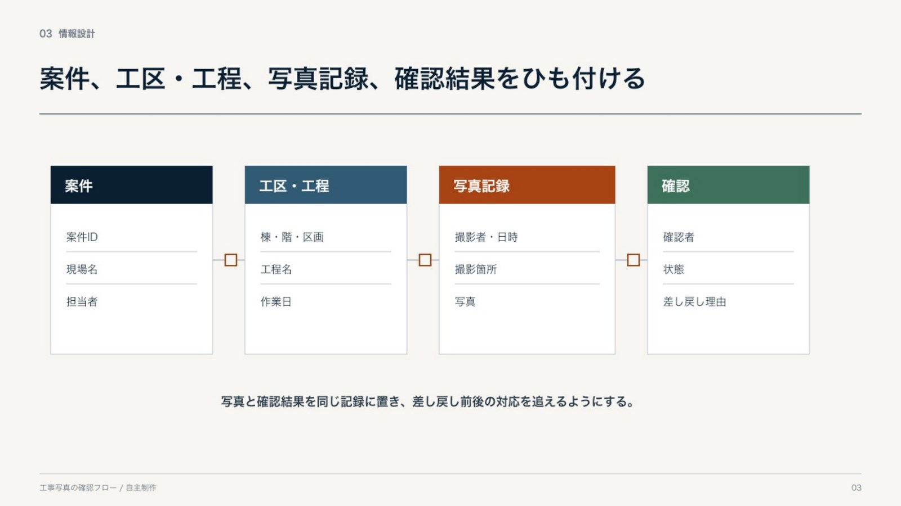
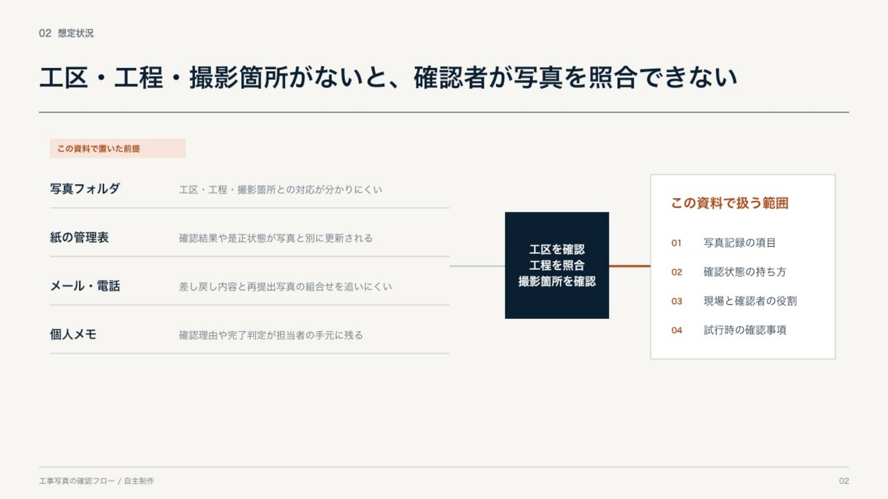
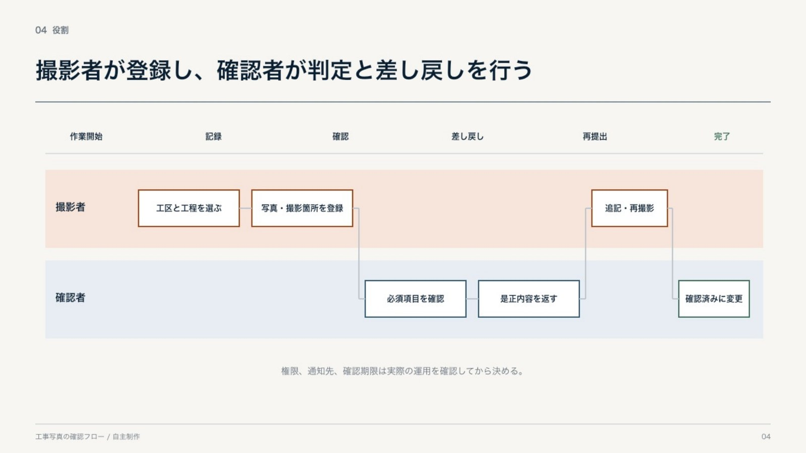
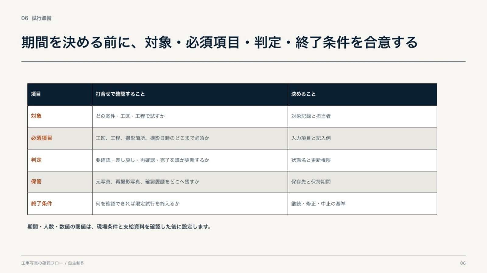
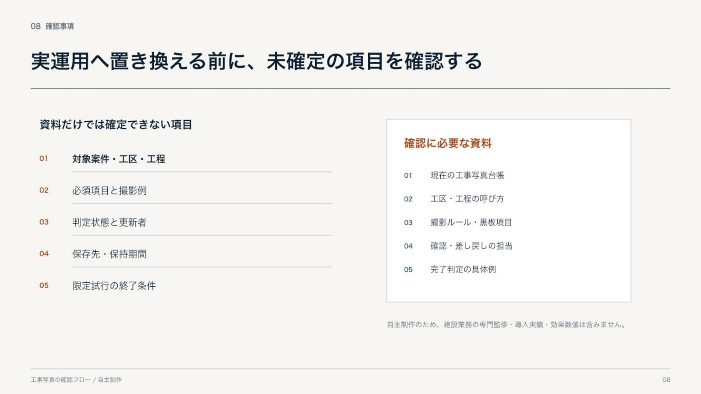

自主制作 03 / PowerPoint / 8ページ
提案前に、未確定条件を見える形にする
工事写真の登録、確認、差し戻し、再提出、完了確認を題材にした想定提案です。現状の課題は仮説として扱い、項目名、権限、保存期間などは確認事項として残しました。

提案の組み立て
解決策を描く前に、仮説と確認事項を分けました。
業務提案では、分からない条件をもっともらしい数字や機能で埋めると、実運用へつながりません。このケースでは、現状を仮説として置き、情報構造、役割、試行条件、追加資料が必要な箇所を順に示しました。
- 01課題を仮説として書く
写真、管理表、連絡、個人メモが分かれている想定を置き、実態調査済みとは表現していません。
- 02情報のひも付きを先に決める
案件、工区・工程、写真記録、確認結果の四つを分けました。
- 03撮影者と確認者を分ける
登録、判定、差し戻し、再提出の往復を役割別に示しました。
- 04期間より先に条件を合意する
対象、必須項目、判定、保管、終了条件を決めてから試行期間を設定します。
- 05未確定事項を最後に残す
権限、通知先、保存期間、完了判定など、追加資料が必要な項目を列挙しました。
課題仮説から確認事項まで
提案内容は自主制作です。建設業務の専門監修、導入実績、効果測定は含みません。




証拠と境界
このケースで確認できること
確認できる
- 仮説と確定事項を分ける構成
- 情報階層と役割フローの図解
- 試行前に決める条件の整理
- 未確定事項を残す提案のまとめ方
- 編集可能なPowerPoint表
この作品では示していない
- 建設業務の専門知識や法令適合
- 現場調査、顧客ヒアリングの実績
- システム開発、運用、保守
- 導入効果、工数削減、成功率